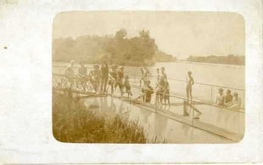
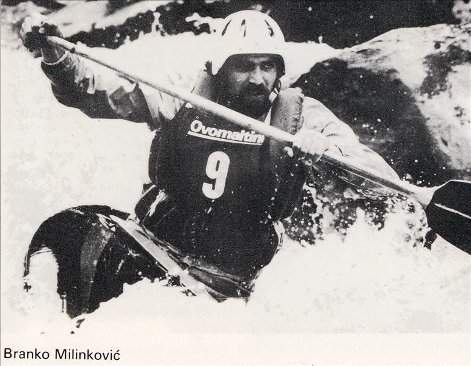

Sportovi na vodi
KRONOLOGIJA
1840.
izgrađeno prvo gradsko kupalište


Kupalište Ferdinada Štebiha na ušću Bure u Dravu, Varaždin, 1930., GMV 44864
1867.
Jakob Levanić prvi učitelj plivanja
1934.
prva plivačka natjecanja priređuju članovi Sokolskog društva
1934.
Zvonimir Suligoj i Franjo Hajtlik čamcem su preveslali od Dravograda do Osijeka (450 km)
1936.
prvi sklopivi kajak na Dravi
1952.
prva vaterpolska utakmica koju ekipa Varaždina igra u Čakovcu
1954.
otvoreni bazeni uz Dravu
1954.
Kajak klub Tekstilac
1955.
osnovan Kajak klub Drvodjelac
1956.
August Kunej i Vlado Hunjek prvi put članovi KK sudjelovali na natjecanju (regata od Podsuseda do Zagreba)
4. listopada 1959.
prvo natjecanje u Varaždinu (na lijevoj obali Drave - željeznički most i ploveći mlin iza njega) - iz Maribora, Ptuja i Celja
1960.
sagrađeno spremište za čamce na Dravi, srušeno 1973., a 1984. dobiven montažni objekt
23. lipnja 1963.
Prvenstvo Hrvatske u slalomu u Varaždinu
1967.
veslači Branko Milinković i Đuro Vrbanec prvaci Jugoslavije u C-2 spustu

Branko Milinković, 1969., GMV 106561
1969.
veslač Josip Brlek prvak Jugoslavije u C-1 spustu
1972.
izgrađen olimpijski bazen kod Varteksa
1976.
osnovan Kajak Klub Varteks Strojoteks
1977.
osnovan Jaht klub varaždin
21. 2. 1981.
osnovan Klub podvodnih aktivnosti Drava
1981. – 1982.
varaždinski kajakaši prvaci Hrvatske
1983.
varaždinski kajakaši osvojili prvenstvo Jugoslavije u ekipnoj vožnji kanu dvosjeda u slalomu
1985.
varaždinski kajakaši osvojili prvenstvo Jugoslavije u ekipnoj vožnji kanu dvosjeda u slalomu
1993.
osnovan Kajak kanu klub Varteks
1993.
ponovo se pokreće rad vaterpolo kluba
1. svibnja 1997.
1. memorijal Siniše Razloga
2002.
Robert Rauš pobjednik u natjecanju Svjetskog kupa u spustu u kanu dvosjedu
2004.
Varaždinski kajak maraton
2004.
osnovan Plivački klub Varaždin